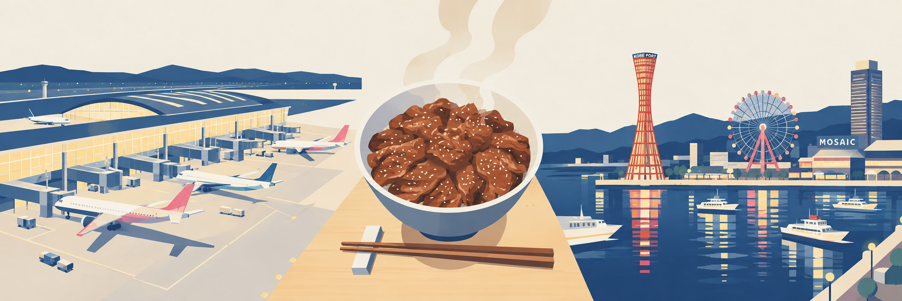

DAY 01 ‧ 11月12日（木）
作息：23:00 就寢
抵達關西 ➔ 入住神戶三宮 ➔ 燒肉丼十番 ➔ 神戶港浪漫夜景
今日詳細交通指引
利木津巴士時刻表
關西機場至神戶：18:05 降落 T2 通關後，直接於 T2 巴士站搭乘利木津巴士直達「神戶三宮站」（車程約 65-75 分鐘，免去搭接駁車至 T1 轉電車的麻煩）。
神戶港夜景動線：用餐後步行至神戶市營地下鐵海岸線「三宮·花時計前站」，搭至「港元町站」下車。出站步行 7 分鐘即可直達神戶港塔與美利堅公園；賞夜景後可沿海濱木棧道漫步至 Mosaic 廣場，最後從「海港園地站（Harborland）」搭地下鐵返回三宮，完美不繞路。
今日行程時程表
18:05 - 20:15
關西機場 T2 入境 ➔ 利木津巴士至神戶三宮
快速通關與提領行李，搭乘利木津巴士直達神戶三宮站，車程舒適放鬆。
巴士官網
交通
20:15 - 20:45
Check-in 入住：東橫INN 神戶三宮站東
辦理入住並擺放行李。（嚴格遵守規定：入住前不安排其他行程）
地圖導航
住宿
20:45 - 21:30
晚餐：燒肉丼十番（神戶三宮店）
品嚐炭香濃郁的人氣招牌燒肉丼，補滿第一晚的體力。
Tabelog 評價
美食